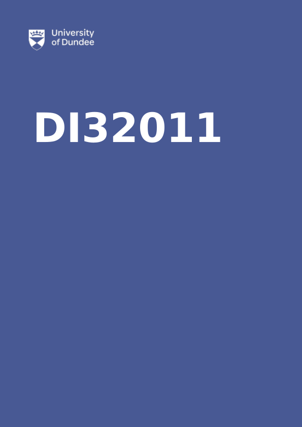

DI32011
DI32011: Mathematical Biology I

Lecturer: Thomas Winyard
Email: twinyard001@dundee.ac.uk
Website: twinyard.co.uk
Office: TBA
Office Hour: Wednesday 17:00 – 18:00, [Teams Link]
Contact Hours
- Mondays 10:00 – 12:00, A206 (Lecture)
- Fridays 16:00 – 18:00, A206 (Lecture/Tutorial)
These will take the form of two roughly 45 minute lectures on Monday seperated by a break and a 30 to 45 minute lecture and 45 to 60 minute tutorial on Friday. Hence, the schedule is based on roughly 2 hours of lectures and 1 hour of tutorial a week.
Lecture notes
The lecture notes are based on ones originally written by Philip Murray, and are aviailable in HTML or PDF at my website. You can also generate the pdf by clicking on the pdf link at the top left of the webpage. Note the PDF version of the notes will not include interactive python elements. I will occasionally edit/update the notes as we proceed through lectures. If you spot any errors, typos or omissions please let me know via email.
Reading
- Mathematical Biology I: An Introduction, Murray (2002)
- Essential Mathemtical Biology Britton and Britton (2003)
- Mathematical models in Biology Edelstein-Keshet (2005)
We will follow Murray as the course text book while the other two sources are recomended reading.
Early weeks cover
Due to visa issues I will not be present for the first few weeks of the course and Chris Jefferson has kindly agreed to cover. You can still reach me via email and I will hold electronic office hours until I can do them in person (see above).
Tutorials
Tutorials will take place in the Friday slot each week with the tutorial sheet provided in advance. To get the most out of tutorials read through the tutorial sheet in advance and attept the simpler questions. This will allow you to focus on (and discuss) the most salient questions in the tutorial. Tutorials are also an oportunity to practice good written mathematical presentation and how to communicate mathematics with each other.
Assessment
- Final exam (80 %)
- 2 class tests (10 % each), approximately week 7 and 11 of term
Details of final exam and class test format TBA.
Python code
Python code is provided for most of the figures in the notes (you can expand the code section by clicking ‘Code’). Note that the Python code does not appear in the pdf.
Many of you have taken the Introduction to Programming module at Level 2 and therefore have some experience installing and using Python. You may also be taking Fundamentals of Scientific Computing alongside this course for which Python will play a part. I strongly encourage you to use the provided codes as a tool to play around with numerical solutions of the various models that we will be working on. The codes should run as standalone Python codes.
To use Python on your own computer we recomend Anaconda. Instructions on how to install it were provided in Introduction to Programming and are available here.
To use it:
- Launch Anaconda
- When a folder opens, double click on Spyder.
- Paste a code from lecture notes into the editor on the left-hand side.
- Click on the green arrow to run the code.
- The plots should appear in the plots tab on the right-hand side.
- Experiment with the code. When you change a model parameter, does the solution change in an expected way?
The notes also provide some examples of how to use Python as a symbolic calculator. This uses a Python library called sympy and is quite similar to Maple.
Schedule
| Week | Lecture | Section | Tutorial sheet | Activity |
|---|---|---|---|---|
| 4 | 1 – 3 | 1.0 – 2.4 | 1 | |
| 5 | 4 – 6 | 2.4 – 2.8 | 2 | |
| 6 | 7 – 9 | 3.0 – 3.2 | 3 | |
| 7 | 10 – 12 | 3.2 – 3.3 | - | Class Test 1 |
| 8 | 13 – 15 | 3.4 – 4.3 | 4 | |
| 9 | 16 – 18 | 4.3 – 4.5 | 5 | |
| 10 | 19 – 21 | 4.5 – 5.1 | 6 | |
| 11 | 22 – 24 | 5 | - | Class Test 2 |
| 12 | 25 – 27 | 6 | 7 | |
| 13 | Revision | Revision | Exam Revision | Exam Revision |